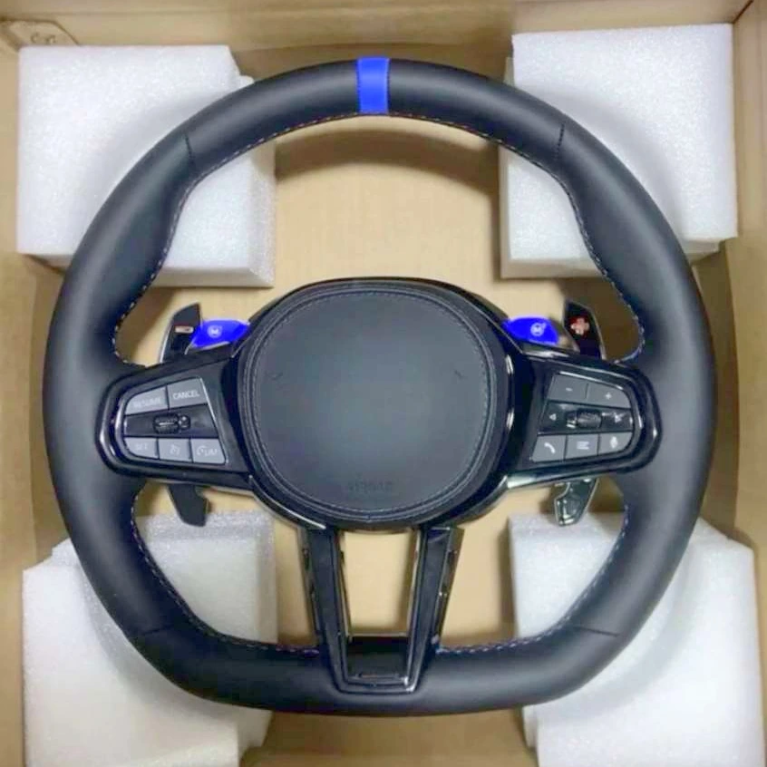

Руль № G36 — BMW G-серии

Под заказ
от 27 900 ₽
| Без подогрева | 27 900 ₽ |
|---|---|
| С подогревом | 35 900 ₽ |
В Telegram откроется сообщение: «Хочу руль № G36 (BMW G-серии)».
Руль № G36 из каталога BMW G-серии.
Под заказ — изготовление около трёх недель.
Совместимость с вашим автомобилем подтверждаем перед заказом по кузову, году и фото штатного руля.
Предоплата 3 000 ₽ (5 000 ₽ для рулей от 50 000 ₽), гарантия на руль 6 месяцев.
Подобрать на свой кузов
Доставка и оплата
- Доставка по России и в другие страны (отправляем во все страны, где есть СДЭК).
- Самовывоз в Одинцово, 24/7 — договоритесь с менеджером о времени.
- Предоплата 3 000 ₽ (5 000 ₽ для рулей от 50 000 ₽), остальное при получении.
- Срок: под заказ около трёх недель.
- Гарантия на руль — 6 месяцев.